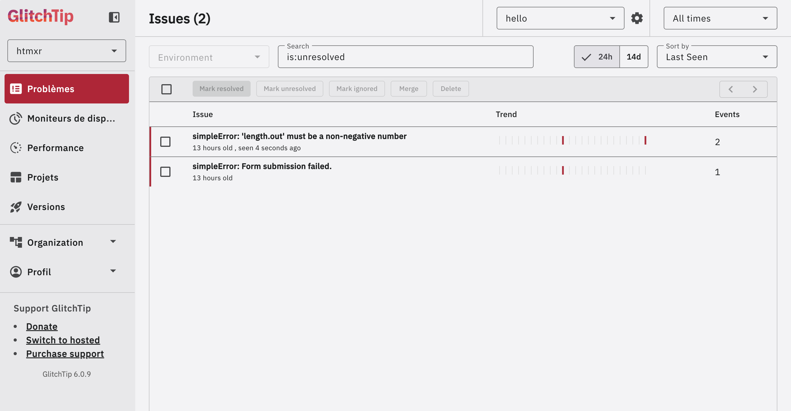
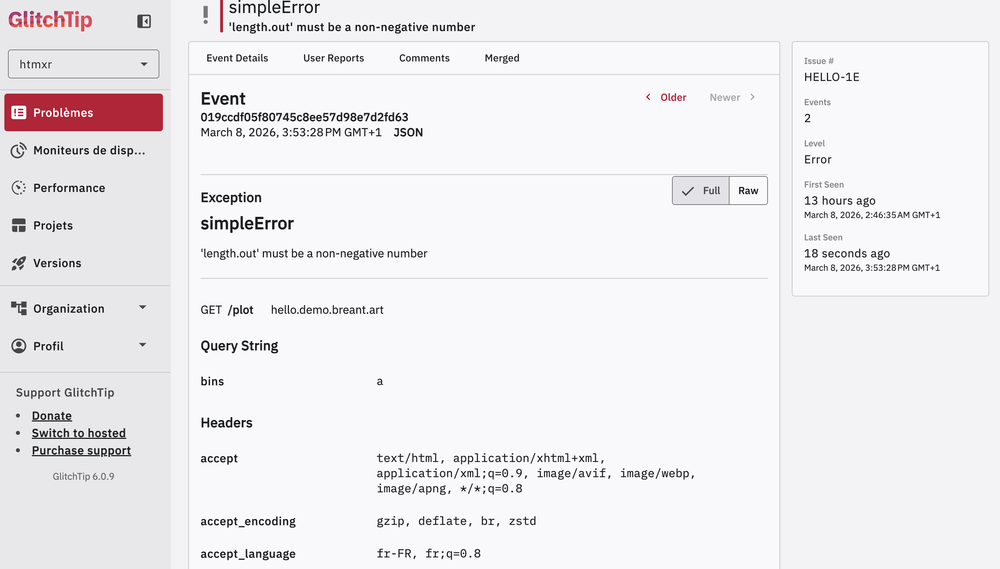
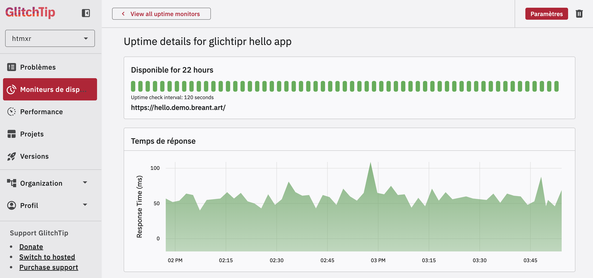

Capture, report, and contextualise R errors in production — with GlitchTip or any Sentry-compatible platform.
When an R error occurs in a production app, it disappears silently unless you’ve set up error tracking. glitchtipr sends errors to GlitchTip with full context (endpoint, query string, HTTP headers) so you can find and fix them without guessing.
Installation
# Install the development version from GitHub:
pak::pak("hyperverse-r/glitchtipr")Example — plumber2
glitchtipr ships with a @capture plumber2 tag. One annotation above a route — that’s all it takes.
Setup
library(glitchtipr)
gt <- gt_connect() # reads GLITCHTIP_DSN from environmentProtecting a route
#* @capture
#* @get /plot
#* @parser none
#* @serializer none
function(request, query) {
generate_plot(query$bins %||% 30)
}@capture wraps the handler automatically. If generate_plot() throws, the error is reported to GlitchTip with full context — then re-raised so plumber2 handles it normally.
In the example above, passing bins = a (a non-numeric value) triggers a simpleError. GlitchTip captures it, groups it with previous occurrences, and shows exactly what happened.

Errors are grouped by type and message. Each one shows its occurrence count and when it was last seen — useful for spotting regressions after a deploy.
Clicking an issue reveals the full event detail: the endpoint that failed (GET /plot), the query string that triggered it (bins = a), and the sanitised request headers.

No log digging. No reproducing in the dark. The context is right there.
Uptime monitoring
GlitchTip also provides uptime monitoring. The same dashboard that tracks your errors tells you whether your app is up.

How it works
Connect once, wrap once, and you’re done:
gt <- gt_connect() # reads GLITCHTIP_DSN — inactive if not set
gt_capture(gt, {
# your code here — errors are reported then re-raised
})If no DSN is configured, gt_connect() returns an inactive connection and gt_capture() is a zero-overhead no-op. Safe in development without a GlitchTip instance.
Works with Shiny too
gt_capture() is framework-agnostic. In Shiny, use it directly inside renderPlot(), observeEvent(), or any reactive context.
library(shiny)
library(glitchtipr)
gt <- gt_connect()
server <- function(input, output, session) {
# In render functions, Shiny catches the re-raised error and displays it
# in the output — no extra handling needed.
output$plot <- renderPlot({
gt_capture(gt, {
x <- faithful[, 2]
bins <- seq(min(x), max(x), length.out = input$bins + 1)
hist(x, breaks = bins, col = "darkgray", border = "white")
})
})
# In observers, wrap with tryCatch to prevent the session from crashing.
# gt_capture() has already reported the error before it propagates.
observeEvent(input$crash, {
tryCatch(
gt_capture(gt, {
stop("Something went wrong.")
}),
error = function(e) invisible(NULL)
)
})
}Design philosophy
Errors propagate —
gt_capture()useswithCallingHandlers(), nottryCatch(). Errors are reported but always re-raised. In plumber2 and Shiny render functions this is handled automatically. In Shiny observers, wrap withtryCatch()aftergt_capture()to prevent the session from crashing.Silent when unconfigured — no DSN means no connection, which means
gt_capture()is a pure no-op. No errors, no overhead in development.Minimal surface — two functions:
gt_connect()andgt_capture(). One plumber2 tag:@capture. That’s the entire API.Self-hostable — built for GlitchTip (open source, Sentry-compatible) but works with any platform that implements the Sentry store API.
Context-aware — the report includes the endpoint, query string, and sanitised headers (
AuthorizationandCookieare stripped automatically).
Code of Conduct
Please note that the glitchtipr project is released with a Contributor Code of Conduct. By contributing to this project, you agree to abide by its terms.